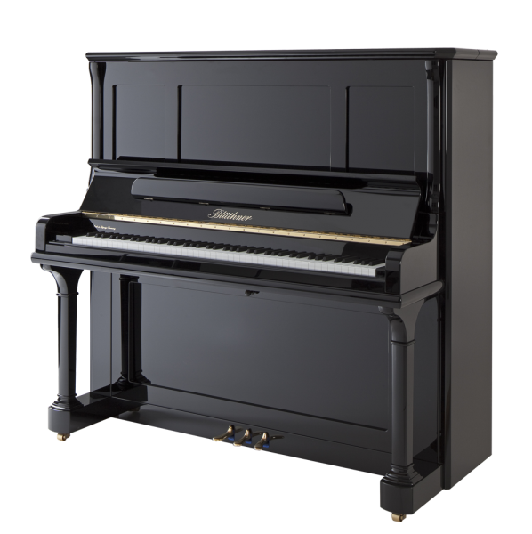

Kawai K-300 (12.295$)

The 48″ K-300 upright piano builds upon the award-winning legacy of its predecessor, the K-3, delivering uncommon touch and exquisite tone. The K-300 is equipped with our revolutionary Millennium III Upright Action designed with components made from carbon composite materials to provide ultra-responsive touch and exceptional musical expression. The K Series K-300 upright piano projects rich, pleasing tone through its tapered solid spruce soundboard that offers a wide dynamic range from thundering fortissmos to the most sensitive and delicate pianissimos. With elegant styling, responsive touch and richness of tone, the K-300 upright piano proudly extends its award-winning heritage by delivering unsurpassed performance that will satisfy the most discerning pianists.
-
Exclusive Millennium III Upright Action with ABS-Carbon Composites
-
Popular 48” Height for Home or Studio
-
Double Felted, Mahogany Core Hammers
-
Height Adjustable Bench
-
Available with Nickel Hardware
C. Bechstein Concert 8 (72.000$)

A dream piano
C. Bechstein Concert 8: an unsurpassed professional piano, in keeping with all the C. Bechstein instruments favored since more than 160 years for their unique sound, touch and durability. The C. Bechstein Concert 8 professional piano is a non plus ultra upright that clearly surpasses many run-of-the-mill grands. Its acoustic assembly, sound volume and colored voice, as well as its precise and highly responsive action, surprise even the most demanding musicians who are used to the touch and sound volume of grand pianos.
Nearly a grand and hand-made Germany
The acoustic assembly of the C. Bechstein Concert 8 upright is similar to that of the grands in the Masterpiece class. Among the features found in both the Concert 8 model and the C. Bechstein grands are the sophisticated dynamics, the colorful and even more subtly graduated timbre, and the optimized sound development. Moreover, the sound profile of the C. Bechstein Concert 8 upright has been improved and is now even more singing and enduring. Such outstanding characteristics explain why several great artists, including Simon & Garfunkel, Sir Simon Rattle and the Beatles, made this exceptional professional piano their favored working instrument. Ask your C. Bechstein dealer and find out about the finest-quality woods used for the piano parts and many other details that make up the exceptional quality of these top-class instruments. And if you visit the C. Bechstein production site, you’ll be fascinated as you discover the secrets of the making of the Concert 8, the “king of uprights”.
Bluthner Model S (82.599$)

Julius Bluthner established the Bluthner piano factory in 1853. Although he died in 1910, his 3 sons took over the company. During World War II, the factory was completely decimated and was rebuilt under national control of East Germany. By 1990, the Bluthner family resumed control and built new facilities just outside Leipzig in 1997.
Kuyruklu Piyanolar
STEINHOVEN SG148 BABY GRAND PIANO (9.720$)

The Steinhoven SG148 grand piano in Polished Ebony is an excellent choice where space is a consideration as the piano has been designed to fit into limited spaces. Constructed to the highest standards it offers tonal quality, touch, durability and value for money.The contemporary style and design has undergone extensive improvements to perfect the piano’s performance. Its graceful design and timeless qualities are all you would expect in this fine, truly impressive piano. A quality instrument of choice among professionals and music schools for its outstanding performance.
Steinhoven Grand Pianos are available in four different sizes: 148, 160, 170, 183 and 227cm. The beauty and harmony of them will enhance any home. Solid wood construction, iron cast frame, high quality strings, action and brass fittings brings them to the highest standard. All our Grand Pianos are built to the highest quality with the greatest attention to detail made throughout. They are all available at very competitive prices.
-
Designed to fit into limited spaces
-
Constructed to the highest standards
-
Offers tonal quality, touch, durability and value for money
-
A quality instrument of choice among professionals and music schools for its outstanding performance
YAMAHA GB1 BABY GRAND PIANO (12.330$)

These aren’t just baby grands. They’re our babies. Yamaha designers, engineers and craftsmen were challenged to bring out the expressive tone, subtle colors and dynamics of a conservatory grand from a more compact instrument. The GB1K and GC Series put the unmistakable sound of a Yamaha grand piano in more places, and in reach of more people, than ever before.
Room-filling sound
-
The GB1K and GC Series pianos may be small, but they have a powerful resonance and tone that brings out the subtle nuances of every note.
Rich, resonant woods
-
Great pianos start with the finest wood. Soundboards and ribs are crafted by Yamaha artisans using hand-selected spruce from our Kitami Wood Mill in Hokkaido, Japan.
Back posts, forward thinking
-
These pianos share the robust back post design of our conservatory series pianos, giving them the powerful resonance, durability and tuning stability you might expect in a larger grand piano.
Hand-wound Yamaha bass strings
-
Bass strings are crafted and hand wound under the watchful eye of Yamaha artisans exclusively for each piano.
Advanced V-Pro frame
-
Yamaha was the first company to use an advanced Vacuum Shield Mold casting technology called V-Pro to create a stronger, lighter, more durable frame worthy of the grandest grand piano. Every frame is built to our exacting specifications at our Iwata Forge in Japan.
A hammer like no other
-
Our unique hammer felt, crafted in Japan, has been designed to bring out the subtle tones of the instrument, and is tested to withstand fluctuations in temperature and humidity and continue playing beautifully for years to come.
STEINWAY & SONS BOSTON GP163 GRAND PIANO (30.700$)

Introducing the new Performance Edition II by Boston, featuring a Pommele Sapele veneer on the inside rim (ebony pianos only), bronze-painted and lacquered plate, black felts, and a rescaled bass and treble strings.
The Boston PE II builds on the best-in-class features that Boston is known for, including a Hard Rock Maple inner rim and Octagrip™ pinblock. At 163 cm, the GP-163 Performance Edition is small enough to fit in any home, but possesses the sound of a much larger grand — thanks to its widetail design.
Dijital Piyanolar
Roland RD-88 (1.450$)

Sahneye Adım Atın
RD piyanoları, 30 yılı aşkın bir süredir dünya çapında sahnelerde görünen profesyonel klavye uzmanlarının tercihi olmuştur. Artık daha iyi, daha erişilebilir ve daha uygun fiyatlı bir cihazda beğenilen RD ses ve çalınabilirliğine sahip olabilirsiniz.
Birinci Sınıf Çalınabilirlik
Otuz yılı aşkın bir süredir RD piyanolarına dünyadaki sahnelerde her geçen bir gece profesyoneller tarafından güveniliyor. Bunun temel nedenlerinden biri, ne kadar çalınabilir olmaları ve bir şarkı çalarken ne kadar şarkıya bağlantılı olduğunuzu hissetmenizdir. Sağlam kontrollere ve doğal hissettiren pürüzsüz, güvenilir klavye mekanizmasına sahip olursunuz.
Otantik Sesler
Harika bir sahne piyanosunun özgün ve karakterli seslere ihtiyacı vardır. RD-88, geçmişinden gelen zengin mirasını kullanır ve birkaç düğme çevirmesiyle ile parıldayan yeni geliştirilmiş SuperNATURAL piyanolarına ve elektrikli piyanolara sahiptir. Ekstra çok yönlülük için, amiral gemisi synthesizer'larımızda bulunan ZEN-Core Synth Sistemini kullanarak tarihi mirasımızdan seçilmiş akustik ve elektronik sesler seçenekleri vardır.
Kolayca Canlandıran
RD piyanoları, sezgisel kontrolleri ve kullanıcı dostu düzeni sayesinde kolayca kullanılabilir. RD-88 modeli de farklı değildir, kendinden emin ve etkileyici performanslar için ihtiyacınız olanı size sunuyor. Çok önemli kontroller açıkça öne çıkartılmış ve her zaman elinizin altındadır, böylece en sevdiğiniz sesleri hızlı bir şekilde bulabilir, efektler ekleyebilir veya mekana uygun ton dengesini şekillendirebilirsiniz.
Yazılım Synth'lere Entegre Edin
Bazen çok özel bir sese, belirli bir yazılım synth veya ses örnekleri kitaplığınızın benzersiz yeteneklerine ihtiyacınız olabilir. RD-88, dahili seslerle yapılandırılabilen veya Apple MainStage'in yazılım synth'lerine entegre edilebilen ve kontrol edebilen üç bölgeye sahiptir. Bu, bir parçanın sesini çoğaltmayı veya favori yazılım synth'leri RD-88'in kendi ses paleti ile karıştırmayı kolaylaştırır.
Hayatınıza Uyum
RD-88'in temiz ve kompakt tasarımı yaşam tarzınıza düzgün bir şekilde uyar. Hafif ve sağlam yapısı, yanınızda taşımayı kolaylaştırır ve küçük sahnelerde veya dar prova alanlarında bile kurulumu hızlı hale getirir. Odayı dolduran entegre hoparlör sistemi son derece kullanışlıdır ve daha az karmaşa ve daha az karışıklıkla çalmanıza izin verir.
Korg SV-2 73 (1.900$)

Evolution of a Modern Classic
Never before has a single instrument captured the signature sound, the unique performance experience, and the aesthetic satisfaction of so many definitive keyboards as the KORG SV-2 Stage Vintage. Ten years ago, KORG launched the Stage Vintage line to wild acclaim. The combination of an intuitive live panel, the premier keybed, the ultimate realization of coveted vintage sounds, the clarity of world-class pianos, the warmth and character of period-proper effects, and the distinctively smooth shape has inspired musicians from around the globe for over a decade. Available with either 88 keys or 73 keys, these SV-2 models are the latest additions to the Stage Vintage series, featuring more of everything that makes an SV great. More Sounds. More Memory. More Polyphony. More Presets. More Control. It is quite literally everything one could want in a performance stage piano … and more. Plus, be sure to check out the SV-2S models, equipped with an internal K-ARRAY speaker system.
More. More. More.
The SV-2 contains over ten times the sample data available in previous SV models, providing ample memory for many all-new piano and keyboard sounds. The SV-2 is home to 72 compelling sounds, and provides 64 memory locations to store edited Favorites for instant access during performance. Using the SV-2 Editor software, users are now free to create their own split and layered programs and save them to one of the Favorites locations. In fact, a single favorite can access up to three timbres at once – A piano/bass split with a layer of strings, for example. While user splits must be created using the SV-2 Editor, the split point on the keyboard can be adjusted directly from the front panel. Plus, polyphony of the SV-2 now stands at 128 voices, allowing more effective layering of sounds or sustained chording
Faithful Sound Reproduction
The SV-2 represents the pinnacle of audio sampling techniques and careful instrument preparation, delivering the most exacting and accurate rendition of so many keyboard classics. Using only the best-maintained instruments and the latest multi-mic’ing methods, every sound has been captured as precisely as possible. The slap of the tine, the release of the hammer, the click of the contacts—every element is amazingly preserved in the RX Layer; mix in as much or as little of these authentic artifacts as you need. In addition, the full dynamic range of each instrument has been faithfully preserved, recreating all of the timbral and volume changes generated from a ppp (pianississimo) touch to an fff (fortississimo) strike – and everything in between. This detailed sampling regime creates a three-dimensional sense of presence, allowing the sound to fully occupy its place in the mix or in the performance space.
Coveted Classics
Experience a treasure trove of classic electro-mechanical, transistorized, tape-driven, analog, and digital keyboard instruments, all reproduced with stunning realism. These sounds defined decades of popular music, and are now once again in demand. The SV-2 places all of these sought-after sounds right at the fingertips – in perfect tune and in impeccable playing condition – no maintenance required. It’s all here. Electric pianos now include nearly all the American tine and reed models, a Japanese electric grand, as well as a rare German electric piano. And then there all those clavis, created using a range of settings. Prefer electronic pianos? There are analog, digital, VPM, FM, and sampled versions – including the ever-popular KORG M1 piano. Looking for Organs? Select from tone-wheel classics; VOX combo, Italian transistor, or American tube organs; and now church and cathedral organs. Need some strings? Choose from a 70s-era analog string machine, prog-era tape strings, or a warm orchestral section. Plus, the SV-2 contains mallets, brass and choir sounds, guitar and bass sounds, even solo and pad synths that are ideal for layering or creating convenient splits.
Plenty of Pianos
The SV-2 remains, at heart, a stage piano. At the touch of a button, you can summon the most outstanding grand piano sounds from around the world – including exemplary pianos from the leading German, Italian, Austrian, and Japanese instrument makers. For a more intimate setting, choose one of the authentic Japanese or German upright pianos. Also included are a real honky-tonk piano and a genuine “tack” piano. Last but not least, the SV-2 contains two gorgeous harpsichords, one French and one Italian. Featured alone, layered with another sound, or split across the keyboard, these outstanding piano sounds deliver a strong foundation while delivering additional performance options.
Seize Control
The SV-2 invites you to take command of your sound. There is no LCD screen, no menus to dive through. Instantly inviting and familiar, the front panel is always live, so go ahead – grab a knob, rotate it, tweak it, and experiment. Change your mind? Pressing in on the knob quickly restores it to the programmed value. Switches with LED indicators show which effects are active, transposition, and more. Sounds are selected through a pair of rotary switches. Eight illuminated buttons in the center of the panel can quickly recall any of 64 Favorite presets, each containing your own customized sounds and settings. Best of all, the SV-2 now offers a Panel Lock function that prevents the accidental switching of sounds if the Favorites buttons are inadvertently touched while performing – and also prevents curious fingers from switching settings between sets. More detailed and convenient control is offered via the free SV-2 Editor software.
Agility and Expression
All SV-2 Stage Vintage instruments share the finest KORG RH3 graded-hammer action keybed. As on a grand piano, the weighting of the keys is graduated across the keyboard; heavier in the lower registers and becoming lighter in the upper registers. This RH3 keybed is remarkably sensitive to the nuances of every performance, accurately delivering every expressive element. Selecting one of the eight distinct velocity curves allow the keyboard response to match any playing technique of performance style. Authentic to the end, the SV-2 offers eight tuning schemes including equal, grand piano stretch, electric piano stretch, electric grand, upright stretch, detuned and two user-definable types (configurable using the free SV-2 Editor). The overall tuning, or concert pitch, of the SV-2 can be adjusted to match another instrument or a previously recorded track. Needless to say, the SV-2 can be transposed into any key.
Making it Real
Adding the right effects provides layers of sonic splendor and adds a crowning level of authority to any vintage keyboard sound. The SV-2 features six independent stages of studio-grade signal processing, highlighted by the KORG Valve Reactor. This Valve Reactor circuit delivers the added warmth or snarl that only a true 12AX7A vacuum tube can provide. As with the sounds themselves, all of the effect models are faithful to the originals and are designed to match the performance, limitations, and behavior of the chosen effect. Easy to use and simple to control, these period-accurate effects and amp models add authenticity to your vintage and modern sonic pursuits. Effect stages include:
-
3-BAND EQUALIZER (Bass, Middle and Treble)
-
PRE FX (Red Compressor, Treble Boost, U-Vibe, Vibrato, Tremolo, VOX Wah)
-
AMP MODEL (Clean, Twin, Tweed, AC30, Boutique, Organ, plus several types of Cabinet Simulators and Noise Reduction)
-
MODULATION FX (Classic Chorus, Black Chorus, Orange Phaser, Small Phaser, MX Flanger, Rotary)
-
REVERB/DELAY (Room, Plate, Hall, Spring, Tape Echo and Stereo Delay)
-
TOTAL FX (Stereo Mastering Limiter, Stereo Limiter)
Modern Connections
The SV-2 is host to all the audio jacks, data connections, and pedal ports that today’s professional stage pianos require. In addition to the Left and Right 1/4" audio outputs, there are Left and Right XLR outputs for connecting directly to a studio console or onstage snake, without requiring any direct boxes or impedance matching transformers. The headphone output allows for onstage monitoring or for rehearsing in private. Din-style MIDI IN and MIDI Out jacks connect easily to other MIDI instruments and music equipment; the USB port provides a data link between the SV-2 and a computer.
There are 3 pedal connections: Damper, Pedal 1, and Pedal 2. The DS-2H Damper pedal is included and responds to half-pedaling for an authentic piano response. Pedal 1 is designed for a switch type of pedal and can operate as a piano Sostenuto pedal, or as a Fast/Slow switch when the Rotary Pro effect is on. Pedal 2 can accept either a sweep-type pedal – great for authentic Wah effects and accurate organ volume control – or an additional switch pedal, providing the piano purist with access to all three piano pedal functions by adding the Una Chorda (soft) function.
SV-2S with internal speaker system
Enjoy the sound, looks, and performance of the KORG SV-2 everywhere you go. KORG has worked with Italian speaker designers K-ARRAY to create the amazing SV-2S. In addition to every feature found in the SV-2, the SV-2S also includes a built-in speaker system. From the backstage dressing room to the dorm or bedroom; from the musical, stage, or dance rehearsal to choir rehearsal; from the living room to the concert hall or house of worship; the SV-2S is ready to perform, wherever and whenever you are. Producing 15 watts of power (x 2; Left and Right), the internal system features two 2.5" loudspeakers, plus a 3" passive radiator. Available with 73 or 88 keys, the SV-2 is finished with an exclusive warm ivory finish contrasting metal grille.
Free SV-2 Editor
Despite the wealth of on-board SV-2 features, the SV-2 Editor provides a convenient and detailed pathway to editing, organizing, cataloging, and storing edited sounds as Favorites for the SV-2. In addition, the SV-2 Editor offers access to hundreds of other sounds that are not immediately available from the control panel. The SV-2 Editor also makes it easy to set up customized split and/or layered Favorites and save them into memory. Additional SV-2 libraries released by KORG can be loaded using the SV-2 Editor to renew your personal sound catalog. Also, you are free to exchange sounds with other fellow users.
Yamaha YC61 (2.050$)

Designed for gigging keyboardists, the YC Series features a newly designed Virtual Circuitry Modeling (VCM) Organ engine with physical drawbars, extensive real-time control and authentic Acoustic/Electric Piano and FM synth sound. With three models to choose from, there’s a YC stage keyboard for every stage and every player.
SOUND
When it comes to versatility, YC is a virtuoso. Featuring premium keyboard sound with more possibilities than ever. Choose from authentic Yamaha grand/upright pianos, electric pianos and keyboards to a tonewheel organ with rotary speaker, synths, acoustic sounds and more. Our proprietary VCM recreates the circuits of vintage analog EQs, compressors and phasers right down to the transistors and resistors to capture the subtleties other digital simulations can’t. It’s like having an incredible sounding keyboard with everything, to go.
VCM ORGAN
How do you reproduce the warm, authentic sound of an organ in a stage keyboard? You build an organ engine the Yamaha way, from the ground up. Yamaha puts your favorite classic organ sounds in one powerful, stage keyboard. YC models three organ vintages - just out of the box, well-traveled and character-rich vintage. Need more? Go under the hood to adjust key click, leakage, rotary speaker speed and more to get the one-of-a-kind organ tone you've been searching for.
VCM ROTARY SPEAKER
YC brings you the authentic sounds of classic rotary speakers with no maintenance required. Choose from two faithfully modeled rotary speaker profiles - warm and full or dirty and aggressive - and adjust top or bottom rotor speed for total control.
[New to OS v1.2]
Based on your feedback, we’ve added a new “Studio” Rotary Speaker, featuring a wider stereo field, increased low rotor and high horn separation, as well as an increased presence to cut through mixes. VCM re-creates the sound and behavior of vintage effects and high-end studio signal processors by modeling the circuits down to the original analog component level.In 1983, Yamaha introduced the iconic sounds of FM (Frequency Modulation) synthesis to the world with the launch of the synthesizer DX7. Now YC brings FM synthesis to the organ for a new generation of players. Simply switch to FM Organ and your drawbars control 8 FM Operators that send a pure sound with massive low end. Add rotary speaker or amp sim effects for character and vibe. Intuitive controls make it easy to discover new sounds. Or recreate classic transistor organ tones from warm to reedy to buzzy by choosing one of three popular FM Organ modes. Helping to broaden your creativity are three new FM organ types – titled F4, F5, and F6. These delve deeper into FM synthesis by adding modulators – or operators – that add upper harmonics to carriers, yet do not sound. The user interface of drawbars, coupled with modulators, create vastly new approaches to the traditional drawbar organ experience, bringing the traditional drawbar concept into the 21st century.
TOUCH
At Yamaha, we put everything we’ve learned over the last 100 years into everything you touch. Whether you prefer the natural feel of a graded acoustic piano, the balanced touch of an electric piano or a waterfall keyboard with authentic organ action, there’s a YC that’s right for you. It’s no wonder more players reach for Yamaha keyboards than any other.
YC61 WATERFALL KEYBOARD
The authentic Waterfall keyboard action of the YC61 was created by painstaking research into traditional organ keyboards and constant feedback from top keyboard artists. The result is a keyboard that not only provides the distinctive touch of an organ, it gives artists new ways to express themselves on acoustic and electric pianos, synth leads, brass sections and more.
DESIGN
YC Keyboards aren’t just designed to be played. They’re made to be bumped, jostled, scratched, crammed in a van, stuffed in an overhead bin and adored by players and fans, gig after gig. In short, they’re built to last, like the company that stands behind them.
DRAWBARS
The nine drawbars on the YC have the footages and ratcheting you expect in an organ. But there’s more to our drawbars than meets the eye. See-through drawbar stops with customizable LED light color make it easy to see differences between simulated upper and lower configurations and play in split mode. It’s like having a virtual set of drawbars to give you more sounds, more flexibility and more choices than you ever thought possible in a stage keyboard.
DIRECT, IMMEDIATE AND TOTAL SOUND CONTROL
YC is made for long jams, not long menus. The intuitive interface gives you fast and easy splits, layers and sound-shaping directly from the front panel. Proving that versatility doesn’t have to be complex.
MOBILITY
YC61 weighs comes in at an incredible 7.1 kg. Which makes them compact and light enough for you to be your own roadie. But with a sound that players who can afford roadies will appreciate.
SOFT CASE
Before you rock, roll. The optional YC soft case features a premium design and zippered compartments for storing pedals and other accessories.
COMPUTER/iOS
YC features a built-in USB stereo audio and MIDI interface for Mac, PC and iOS devices. With a single USB cable, you can record the YC audio and MIDI to a DAW and play and monitor virtual instruments.
Dijital Kuyruklu Piyanolar
KAWAI DG30 (6.099$)

The new DG30 digital grand piano features the class-leading Responsive Hammer III keyboard action and acoustic piano sound of the Shigeru Kawai SK-EX, providing a more natural and realistic playing experience. The RHIII action delivers authentic piano touch through structural reinforcements that minimize noise and key wobble, as well as a springless design that allows for smooth movement. Complementing these elements, the Shigeru Kawai concert grand piano sound offers both the warmth and power found in the acoustic instrument. The gorgeous sounds are delivered through a powerful 4-speaker sound system developed in collaboration with premium audio specialists, Onkyo.
Bluetooth® MIDI and Audio expand the DG30’s functionality by connecting wirelessly with smart devices while using apps. An adjustable metronome, built-in lesson function, and song recorder also contribute to making this piano a great choice for beginning piano players. All of these features are integrated into the attractive cabinet, which offers modern style and elegance, along with long and short lid props for either full or partial lid positions. The DG30 Digital Grand Piano provides an inspiring piano playing experience while bringing beauty and elegance to any home.
HIGHLIGHTS
-
Responsive Hammer III (RHIII) action with Let-Off 88 weighted keys with Ivory Touch key surfaces
-
Progressive Harmonic Imaging sound technology with Shigeru Kawai grand piano sounds and 88-key stereo sampling
-
Over 350 authentic sounds, including acoustic pianos, electric pianos, organs, strings, bass etc.
-
Audio technologies developed in partnership with Onkyo, 40W speaker system
-
Bluetooth MIDI and Audio functionality with aptX support for wireless communication and audio playback
-
Built-in Burgmüller, Czerny, Beyer etudes and Alfred lesson songs
-
Standard MIDI, USB to Host/Device, Audio In/Out connectivity
-
Cheekblock control panel with high quality OLED display
-
Attractive, compact grand piano cabinet design, Ebony Polish finish, 2-position topboard
FEATURES
TONE
The DG30 digital grand piano captures the magnificent tone of Kawai’s flagship Shigeru Kawai SK-EX full concert grand piano. Widely regarded as the “premier pianos of Japan”, Shigeru Kawai instruments grace the stages of concert halls and musical institutions throughout the world, and are prized for their exceptional tonal clarity. In addition, the DG30 also features the distinctive sound of Kawai’s highly acclaimed EX concert grand piano, which has frequently been selected by professional pianists in such prestigious events as the Chopin, Tchaikovsky, and Rubinstein international piano competitions, among others. Both instruments have been carefully recorded, meticulously analysed, and faithfully reproduced with full 88-key sampling using Harmonic Imaging™ sound technology. This unique process accurately recreates the broad dynamic range of the original grand pianos, affording pianists an extraordinary level of expressiveness ranging from the softest pianissimo to the strongest, boldest fortissimo.
TOUCH
The new class-leading Responsive Hammer III keyboard action on the DG30 re-creates the exceptional touch of an acoustic grand piano with its realistic movement and rigid “springless” design working together to provide a smooth, natural piano playing experience. A triple-sensor key detection system enhances responsiveness and accuracy
SUPERIOR SOUND
The DG30 features a premium speaker and audio system developed by audio equipment specialist Onkyo delivering improved tonal clarity and superior sound. Lower-range frequencies are delivered through the underside of the instrument, while mid and high frequencies are projected outward via top-mounted speakers, closely mirroring the sound projection characteristics of an acoustic piano.
DIGITAL AUDIO
The DG30 can record and play digital audio files using a USB memory device, in either MP3 or WAV formats. Record your live playing or Internal Recorder songs, or play along with your favorite recording artist. Transfer your MP3 to a computer for emailing to family and friends.
BLUETOOTH®
In addition to standard USB and MIDI jacks for connecting to computers or other instruments, the DG30 also features integrated Bluetooth® MIDI and Audio technologies that allow the instrument to communicate with supported smart devices wirelessly. Once paired with a phone, tablet, or laptop, DG30 owners can enjoy a wide variety of exciting music-related apps that enhance their learning and playing experience, or stream audio from songs and videos directly through the instrument’s premium amplifier and speaker systems without the need to connect additional cables.
SONG RECORDER
The recorder on the DG30 allows up to three songs to be stored in internal memory and played back at the touch of a button. This functionality is expanded with 2-track recording that allows left and right-hand parts (or two different voices) to be recorded separately. Players can play back the left-hand part while practicing the right-hand part live—or vice versa—to strengthen hand independence.
LESSONS AND EXERCISES
The DG30’s convenient lesson function allows aspiring pianists to learn piano with classical Czerny, Chopin, Burgmüller, Beyer, Bach, and Beethoven etudes, or a collection of songs from the popular Alfred's Basic, Adult, and Premier course books. With a strong emphasis on acoustic piano realism, the DG30 also features traditional finger exercises, scales, and warm-up drills, and includes companion books for all classical scores to further aid one’s piano development. Learn More »
GRAND FEEL PEDAL SYSTEM
The DG30 features three pedals – soft, sostenuto, and damper (with half-damper capability). The new Grand Feel Pedal System accurately replicates the position and individual weighting of the damper, soft, and sostenuto pedals of a Shigeru Kawai SK-EX concert grand piano to further enhance the DG30’s acoustic piano-like authenticity.
Roland GP609 (8.999$)

Teknolojiyi Gelenekle Sunan Kuyruklu Piyano
GP609 kaliteden ödün vermeyen mükemmel bir piyanodur. 300 yılı aşkın bir süredir müziğin kalbinde bulunan geleneksel bir akustik kuyruklu piyanonun ses performansını yaşayabilirsiniz. Ayrıca en son dijital teknoloji tarafından sunulan sınırsız yaratıcılık olanaklarını keşfedebilirsiniz. 1974 yılında dünyanın ilk dokunmaya duyarlı elektronik piyanosunu yaratan Roland, dijital piyano yeniliğinde bir lider haline geldi ve yeni GP609, ileri teknoloji ve bilgi birikiminin müziğinizi daha da ileri götürebileceğine olan inancımızı taşıyor.
Akustik Geleneğin En İyisi. Modern Teknolojinin Yüksekliği.
Teknoloji ve geleneğin bir arada bulunabileceğine inanmak istiyorsanız Roland GP609 Dijital Kuyruklunun başına oturmalısınız. Bu lüks enstrüman, her tip çalıcıya klasik bir kuyruklu piyanonun kabin tasarımıyla ileri teknoloji ve geleneksel çalma hissini birleştirerek mükemmel bir piyano deneyimi yaşatır. En yeni ses işlemcisini yepyeni bir klavye mekanizması, geliştirilmiş çok kanallı hoparlör sistemi ve çeşitli dijital avantajları bir araya getiren bir enstrümandan esinlenin, gelecek yıllar boyunca muhteşem performanslarınızı yaratacak çarpıcı sesler ile ilham alın.
Gerçek Hissiyatlardaki Performanslar için SuperNATURAL Modelleme
Akustik piyanoyu yıllarca çaldıysanız, bu unutulmaz sesi ve hissi hiçbir şeyin yaratamayacağına karar vermiş olabilirsiniz. Öyle ise GP609'da bir tuşa basın ve tekrar düşünün. Bu son teknoloji dijital enstrüman Roland'ın beğenilen SuperNATURAL Piyano Modelleme özelliğine sahiptir ve zengin-karmaşık bir ton için akustik bir piyanonun tüm ses oluşturma sürecini yeniden oluşturur. Benzersiz bir klavyeden esinlenerek ahşap malzemelerle harmanlanarak üretilen hibrit klavye harika bir his ve dayanıklılık sağlarken, ileri teknikler kullanan en zorlu çalıcılar bile progressive damper aksiyon pedalından memnun kalacaklardır.
Lüks Görünüm ve Geleneksel Kuyruklu Piyano Hissiyatı
Gelişmiş teknolojiyle donatılmış olmasına rağmen, GP609 stil konusunda güven verici biçimde gelenekseldir. Klasik çizgileri, yerden tasarruf sağlayan kompakt bir kuyruklu piyano gövdesiyle birleştirir. İki adet birinci sınıf renk opsiyonu ile gelir. Parlak siyah ve Parlak beyaz.
Özel Tasarlanmış Hoparlörlerden Odanızı Ton ile Doldurun
Geleneksel bir akustik kuyruklu piyanonun zenginliklerinden gelen keyiflerden biri, kontrol edebildiğiniz doğal ton ve projeksiyonudur. Roland GP609'un özel olarak tasarlanmış çok kanallı ses teknolojisi, enstrümanın kalbinden gelen boyutsal ses sağlayan dahili bir ses sistemi sayesinde Roland GP609'un başındayken kafanızı çevirdiğinizde aynı akustik kuyruklulardaki efekti elde etmenizi sağlamaktadır. İster evde çalıyor olun - ister restaurantlardan otel salonlarına kadar geniş mekanlarda - herhangi bir alanı dolduran güçlü, etkileyici ve kontrol edilebilir bir sese güvenebilirsiniz.
Yaratıcılık Alanınızı Genişletin
Günümüzde birçok kişi sıklıkla akıllı telefonlarında depoladıkları en sevdikleri şarkılarla birlikte piyano çalar. Dahili Bluetooth® kablosuz bağlantı desteğiyle GP609; ilham verici ve etkileyici bir deneyim için müziğinizi piyanonun güçlü dahili hoparlörlerinden vererek daha da ileri taşır. Roland’ın ücretsiz Piano Partner 2 uygulamasını tabletinize yükleyerek Bluetooth teknolojisi sayesinde kablosuz olarak piyano çalmayı öğrenmenizi ve zevk almanızı sağlar.
*Bluetooth özelliği ürünü satın alınan ülkeye bağlı olarak kullanılamayabilir.
Herhangi bir Salona Uyumlu
Kuyruklu piyano, güçlü ve gösterişli bir ton karakteriyle rafine edilmiş ve görkemli bir enstrümandır. Zarif görünüşü; ister evde, isterse bir yerde olsun, her iç mekana klasik bir zerafet getiriyor. İnkar edilemez derecede güzel olsa da, akustik bir kuyruklu piyanoya sahip olmak zordur. Düzenli olarak ayarlama yapmanız gerekebilir ve klavye bakım masraflarının yanı sıra, hareket etmesini zorlaştıran önemli ağırlığı da düşünmeniz gerekir. GP609; bir mekanda - veya evde görkemli bir piyanonun keyfini güçlük çekmeden çıkarmayı kolaylaştıran çeşitli dijital avantajlar sayesinde bu sorunları önler ve maliyetlerinizi düşürür.
YAMAHA N3X AVANTGRAND (24.199$)

Touch, pedal feel, reverberation, and resonance—by all metrics, the N3X meets or surpasses the demands of even the most discriminating pianist.
-
Specialized Grand Piano Action with Ivorite®
-
Spatial Acoustic Sampling
-
Sound sampled on four channels from the Yamaha CFX and Bösendorfer Imperial
-
Yamaha CFX Binaural sampling
-
Virtual Resonance Modeling (VRM)
-
Spatial Acoustic Speaker System
-
Soundboard Resonator
-
Tactile Response System
-
Specialized Grand Piano Pedal
-
USB Audio Recorder
-
XLR jack outputs